Presencia en TV Nacional
Shark Tank México: 2.2M+ Views
Presentando la visión de un canal de distribución para videojuegos ante los tiburones. Un hito que consolidó nuestra presencia en el ecosistema nacional.
Contacto para Medios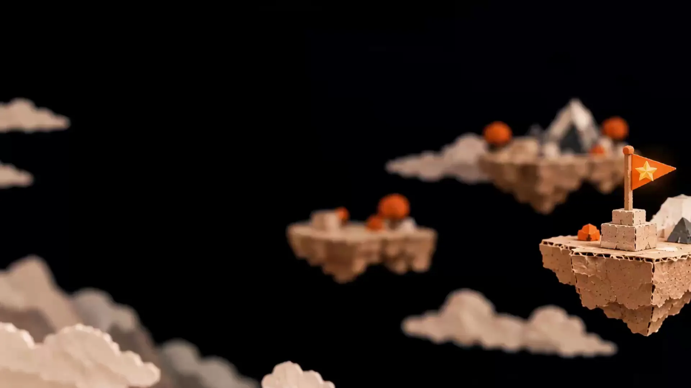
Veterano de Videojuegos & Emprendedor (20+ Años)
Dirijo Amber México, estudio de videojuegos en Guadalajara que trabaja para publishers de todo el mundo, y llevo dos décadas fundando estudios. No somos gurús, estamos documentando el viaje.
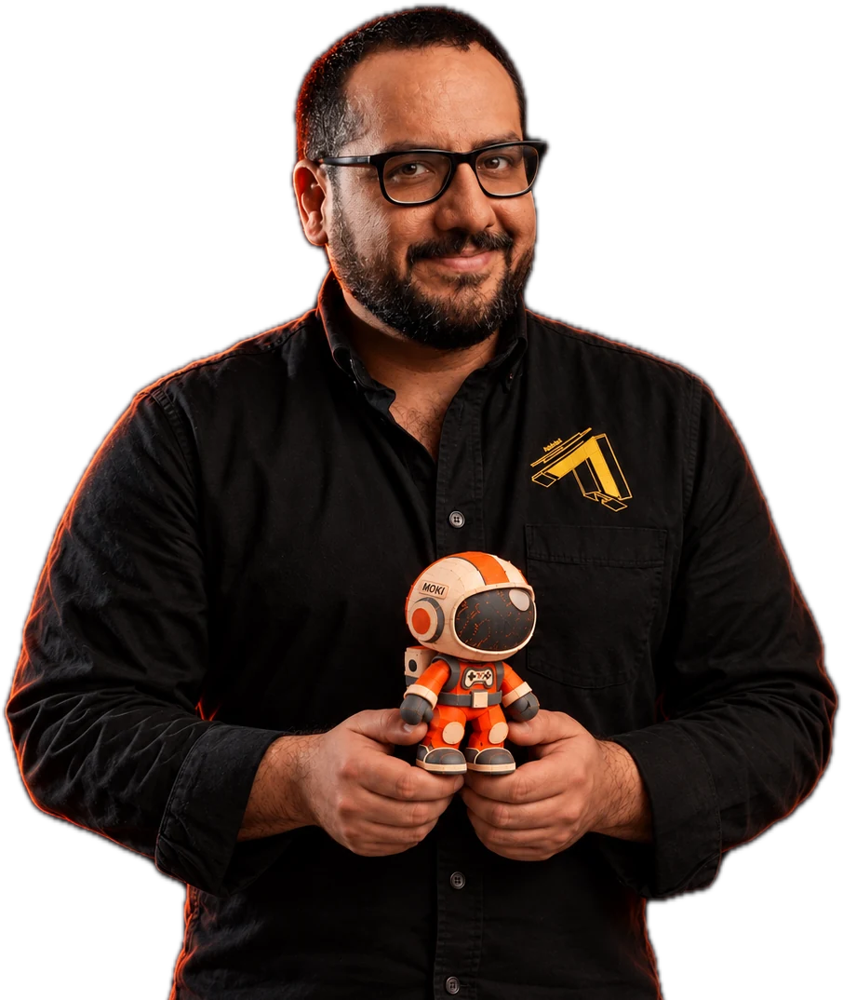
Prueba Social & Reconocimiento de la Industria
“Jorge is a visionary leader, whose humanity shines bright and inspires all those around him.”Mihai PohonţuCEO of Amber
“The heart and soul of Game Development in Mexico. He leads by inspiring others.”Bradd McBreartyCreative Director (Ex-Apple, Disney, EA)
“Amazing gaming veteran who leads by example. Always guided by kind soul and sharp instincts.”Vlad PopoviciCOO | Tech Leader | Board Member
“One of these rare people that can create something out of nothing, anytime, anywhere.”Bogdan ConstantinescuHead of Product & Innovation
“Persistence beats resistance. If I know someone who definitely does not give up, it is Jorge.”Alvaro JaureguiConcept Artist | Visual Developer (AAA)
“Dynamic, visionary, and inspiring. One of the most remarkable professionals.”Mihaela DuțăIT Project Manager
“He's pure energy. Working with Jorge is akin to working with the Duracell Teddy bear.”Gwenael HeliouRegional GM @ Kabam
“Instrumental to Amber's international presence. His positive attitude made this possible.”Vlad AnghelaharHead of Engineering at Amber
“The living example of Kaizen. Always looking for a way of improving whatever he is working on.”Alberto RamírezGame Designer
“Extraordinary person. Maintains a personal touch, helping you feel valued and heard.”Stone PeralesSenior Art Director
“Charisma and a great sparkle to ignite fire into projects. I am happy to consider him my friend.”Hector Padilla PerezDirector of Engineering
“Persistence and determination to achieve goals are truly inspiring. Sharing is caring.”Abraham Lara3D Animation Director
Dos décadas de lecciones en la trinchera del emprendimiento tecnológico y el gaming global.
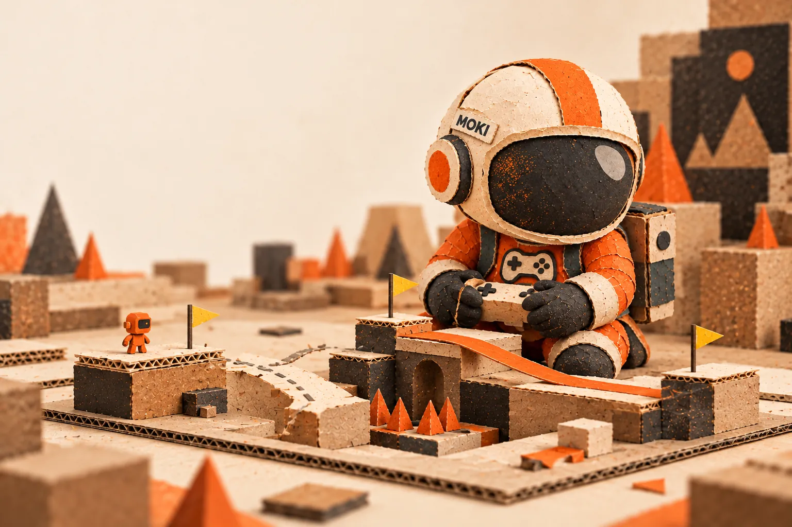
Fundación de KaraOkulta. Desarrollo de juegos móviles pioneros en México y construcción de comunidad desde cero.
Lanzamiento de Sparkplug Technologies para escalar servicios creativos bajo demanda y consolidar el modelo de suscripción.
Participación en Shark Tank México, escalamiento de operaciones y posicionamiento como referente nacional en gaming.
KaraOkulta es adquirida por Amber. Liderazgo del crecimiento masivo del estudio de 20 a 200+ artesanos.
Consolidación como General Manager de Amber México, obtención de MBA, y creación de ecosistemas de contenido.
Estudios, servicios y negocios que forman parte de mi camino como emprendedor.
Fundamos el estudio que marcó un hito en la industria nacional al convertirse en el primer estudio jalisciense en ser adquirido por una firma internacional (Amber).
Visitar Sitio →Suscripción de servicios creativos (no es software de retail ni un estudio de juegos). Revolucionamos la industria con Creative Services as a Subscription. Ofrecemos desarrollo de software, arte AAA y VFX bajo un modelo flexible y escalable.
Visitar Sitio →Tras la adquisición, impulsamos el crecimiento del estudio de 20 a 200+ artesanos, supervisando operaciones estratégicas y expandiendo la influencia AAA en la región.
Visitar Sitio →Fundado para profesionalizar la industria y escalar talentos a estándares AAA. Somos el único centro autorizado por Epic Games en México enfocado en Unreal Engine. UETC no es UNITEC: es el U-Echo Training Center, un centro de entrenamiento en Unreal Engine.
Visitar Sitio →Socio fundador con mi tío. Taller de motos en Acoxpa, CDMX. Vamos a abrir el 1 de noviembre de 2026.
Visitar Sitio →LP de Altered Ventures, el fondo de Mario Valle Reyes en IA, gaming y tecnología inmersiva.
AMBER
General Manager México
Somos un colectivo global de talentos creativos entregando impacto positivo. Como Socio de Innovación, mi misión en México es evolucionar cómo se crean y consumen los videojuegos en todas sus escalas y para todas las plataformas, desde títulos independientes hasta hitos tecnológicos mundiales.
Estas son algunas de las decenas de experiencias y videojuegos globales en los que hemos colaborado o desarrollado integralmente a través de nuestros equipos especializados.
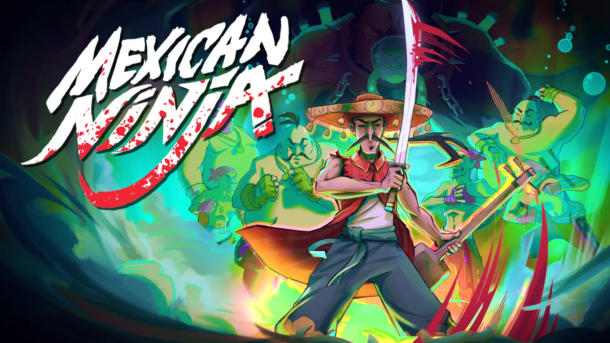
Co-desarrollado con Red Rum. Un roguelike de acción estilizado en Nuevo Tokyo que muestra nuestra capacidad creativa y técnica.
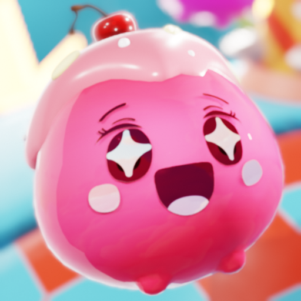
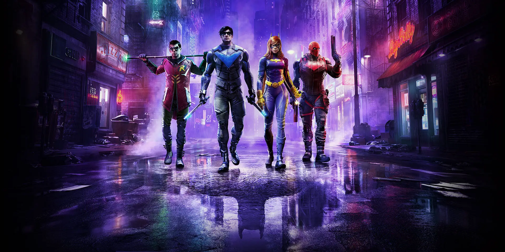
Co-desarrollo, arte y QA para este RPG de acción masivo en el universo de Batman.
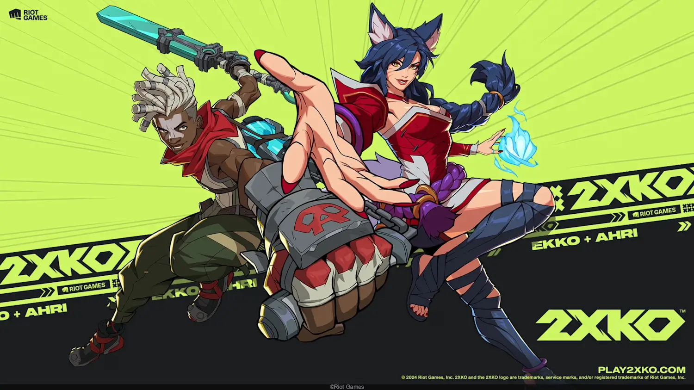
Ingeniería y co-desarrollo para el próximo juego de lucha 2v2 de League of Legends.
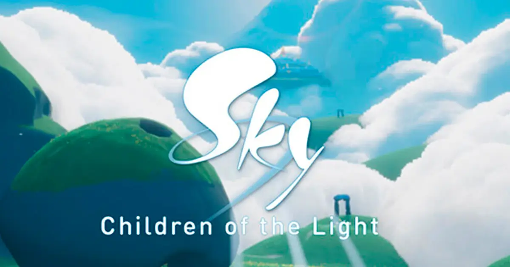
Soporte técnico y de ingeniería para mantener su vasto mundo social.
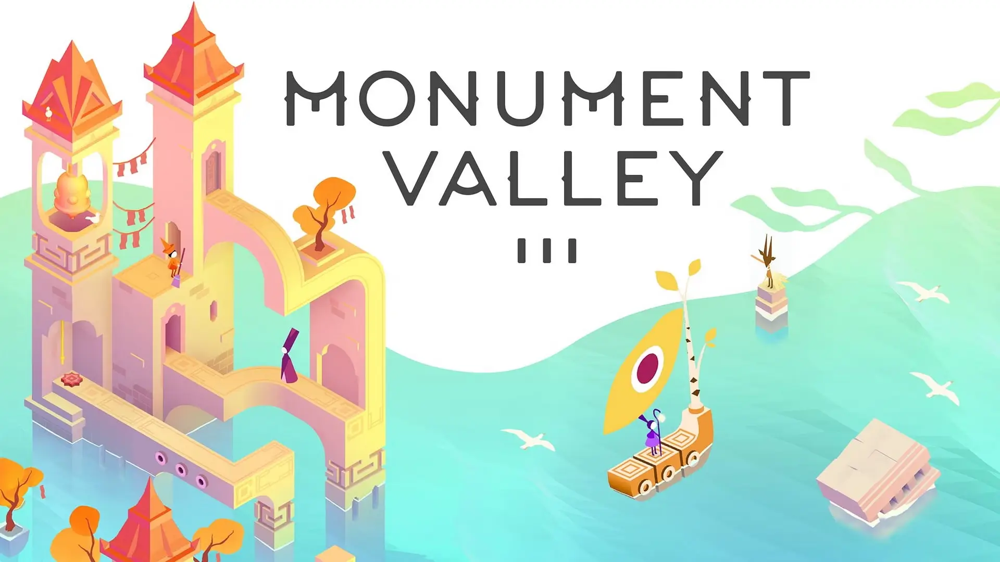
Colaboración en el desarrollo de la esperada secuela de la galardonada franquicia.
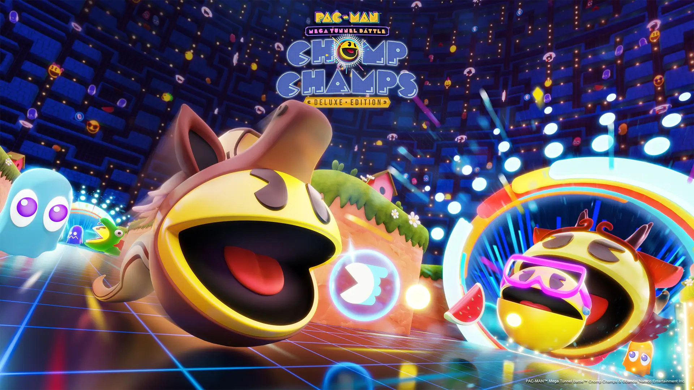
Desarrollo principal para este Battle Royale de 64 jugadores del icónico Pac-Man.
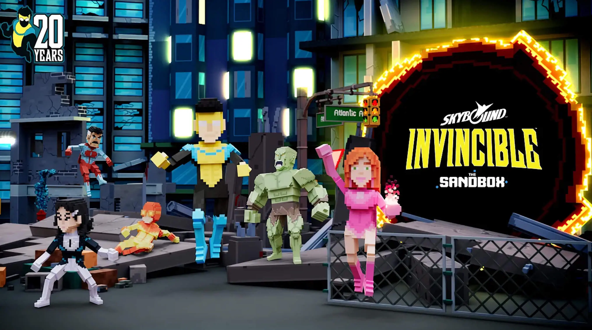
Co-desarrollo para el RPG móvil basado en la exitosa serie de Amazon.
Proyectos de Amber para
Videojuegos, herramientas personales y proyectos que estamos construyendo. Cada uno tiene su propósito y su etapa.
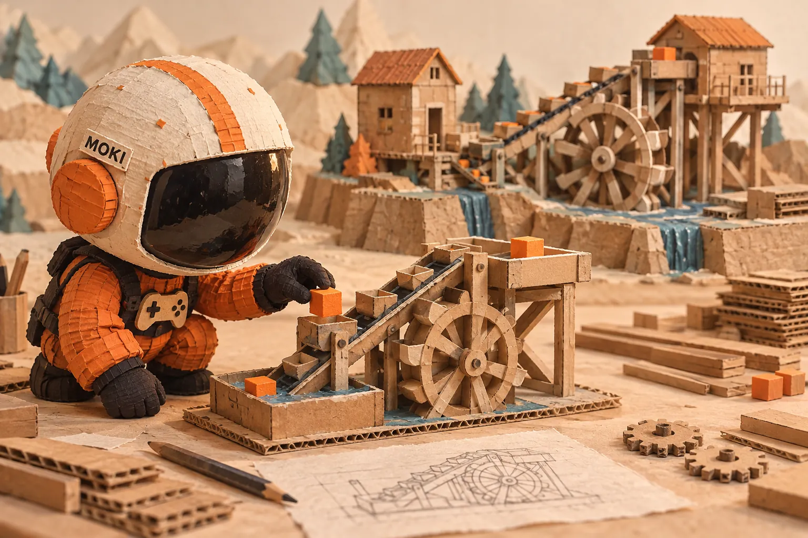
Comunidades, contenido y proyectos para quienes hacen videojuegos.
Conectando juegos Indie con creadores de contenido. La plataforma definitiva para amplificar el alcance de nuevos títulos.
Mi canal para quien hace videojuegos: cómo enseñar, publicar y vender tu juego. Ahí hablo de cosas como la ficha de Steam o qué pasa cuando 10 desconocidos juegan tu juego por primera vez.
Ver El Motor en YouTube →Lo estamos construyendo en UETC (Arden): una plataforma de aprendizaje adaptativo con IA. Le das un tema o un PDF y arma una clase con maestros IA, pizarrón, quizzes y proyectos a tu nivel. Beta para miembros del Club UETC.
Conoce EchoMentor AI →Nuestra IP propia utilizada para entrenamiento de talento y pruebas de frameworks en Amber/KaraOkulta.
Ver Canal →La red social de desarrolladores de videojuegos más activa de México. Conecta con otros builders.
Unirse en Facebook →La comunidad gamedev más grande de LATAM con +3,500 miembros. Mentoría, retos Epic y conexión directa con Lighthouse y programas de inversión. Es el club de UETC (no de UNITEC).
Unirse al Club →La música que nos inspira a construir mundos virtuales.
Escuchar en Spotify →Herramientas, experimentos y contenido sobre organización personal, IA, tecnología y emprendimiento.
Astronauta de cartón naranja. Viaja, juega, construye y vuelve a intentar. El alter ego explorador de la marca personal, con su banco de poses.
Visitar Moki →Estamos construyendo una herramienta para quienes quieren ordenar sus ingresos, gastos comprometidos y prioridades en un plan mensual, y revisarlo cada semana. La página pública presenta la propuesta y un ejemplo interactivo; la aplicación aún no está disponible.
Conoce Rich Life →Inyecta tu DNA profesional en la IA. Una herramienta para profesionales que dominan la colaboración con modelos generativos.
Crear mi Prompt →Suscríbete GRATIS para recibir lecciones cortas sobre gaming, tech y emprendimiento cada día.
Suscribirse en YouTube →Donde la visión empresarial se encuentra con el código. Documentando mis frameworks, agentes de IA y experimentos de Vibecoding para potenciar equipos de alto rendimiento.
Explorar Repositorios →Acceso exclusivo, Yorgen AI y comunicación directa con mis iniciativas.
Obtener Acceso al Club →Herramientas de atención al cliente y automatización para marcas.
Potenciando la atención al cliente con IA avanzada. Automatización de DMs, generación de leads y crecimiento escalable para marcas modernas.
Explorar Chatbots →Producto de Amber: Juegos como Servicio (GaaS)
Un parque temático virtual en Roblox diseñado para cerrar la brecha entre marcas y la comunidad gamer. No es solo presencia; es interacción profunda a través de retos, ítems de marca y experiencias inmersivas.
Estudio: Logrus
Acompañando el crecimiento de la industria a través de contenido, conferencias y presencia en medios.
Nuestro Podcast Principal
Hablamos sobre nuestras IPs, noticias de la industria y la escena de estudios en Latinoamérica. Todos los jueves 5:00 PM en vivo por YouTube, X y Facebook.
Únete a la Comunidad →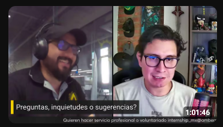
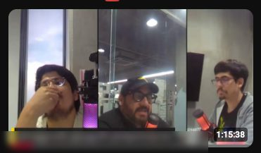
Presencia en TV Nacional
Presentando la visión de un canal de distribución para videojuegos ante los tiburones. Un hito que consolidó nuestra presencia en el ecosistema nacional.
Contacto para MediosEl Primer Reality Show de Gaming
Participé como parte del jurado experto en la primera producción de este tipo en LATAM, evaluando el talento emergente y la viabilidad técnica de nuevos estudios.
Ver todos los episodios →Keynote Speaker
Conferencia magistral sobre profesionalización y metodologías de escalado para la industria independiente en México y Latinoamérica.
Reconocimiento de la Industria
Q&A clarificando mi historia, propósito y el progreso consolidado a través de los años. Una síntesis de 20 años en 6 minutos.
Ver Q&A CompletoAlianzas de Contenido
Conecta tu marca con audiencias de alto valor a través de narrativas interactivas y contenido especializado. No solo mostramos tu logo; integramos tu marca en el corazón de la cultura gaming para generar engagement real y conversión de leads.
Legacy & Hitos
Un vistazo al progreso y evolución desde nuestra fundación en 2004: Documental de TV Azteca sobre la consolidación de KaraOkulta. La visión de crear una industria desde cero en México.
Ver Retrospectiva HistóricaMencionado en
Evoluciona tu marca a un medio interactivo
Jugar Brandcade en Roblox →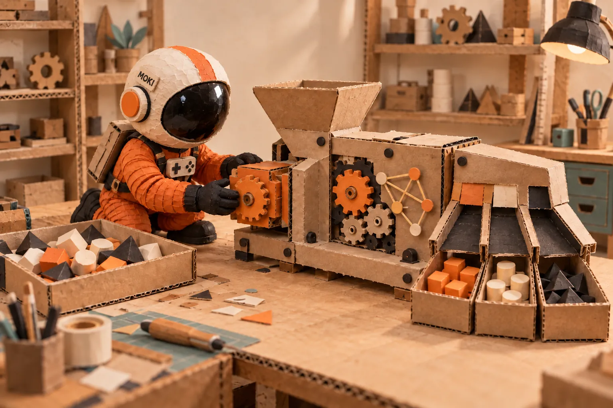
Modelos operativos en 'Eterno Beta' diseñados para optimizar la innovación y el crecimiento de estudios tecnológicos.
GDF
Metodologías ágiles aplicadas específicamente a la creación de IPs memorables y productos free-to-play.
SDF
El blueprint que usé para escalar de 20 a 200+ personas. Cultura, procesos y escalabilidad humana.
AGF
Optimización de flujos de trabajo en equipos multidisciplinarios de alta intensidad.
¿Quieres profundizar en estas metodologías y escuchar mi podcast personal?
Suscribirse al Substack y Nano Podcasts →Sígueme en mis canales principales donde comparto el 'behind the scenes' del gaming.
Lo que estoy publicando ahora mismo en todas mis redes.
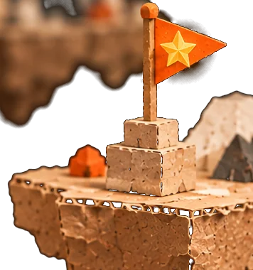
Obtén el Starter Pass 24/7 para acceso al Club, consultas a Yorgen AI y noticias exclusivas antes que nadie.
Acceso al Club